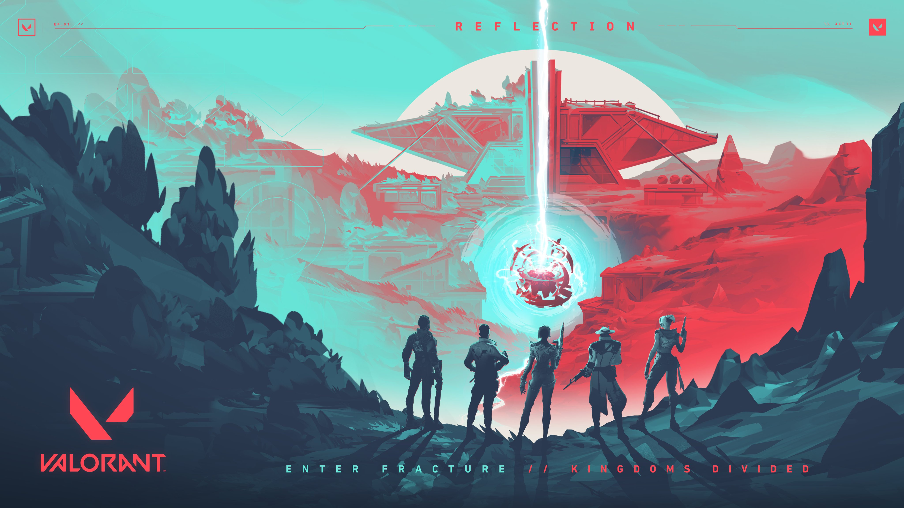
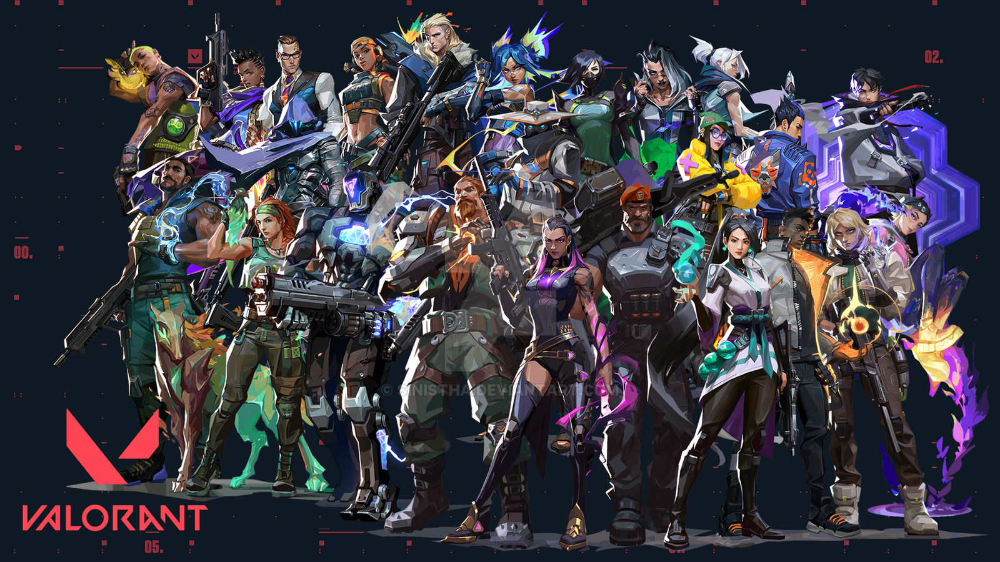

Tudo o que você precisa saber sobre o jogo Valorant
"O CS com poderzinho"
O que é?
Valorant é um jogo de tiro tático em primeira pessoa, gratuito para jogar, desenvolvido e publicado pela Riot Games. O jogo utiliza a Unreal Engine 4.
Anunciado em 15 de outubro de 2019 sob o codinome "Project A", Valorant foi revelado oficialmente em 2 de março de 2020 e lançado para PC em 2 de junho de 2020.
No primeiro aniversário do jogo, Valorant contava com 14 milhões de jogadores ativos mensalmente. A Riot Games anunciou planos para expandir o jogo para plataformas móveis e consoles no futuro, embora o crossplay entre PC e mobile não esteja planejado.
História
Valorant se passa em um futuro próximo após um evento global conhecido como "First Light". Esse evento provocou grandes mudanças na vida, tecnologia e estrutura governamental do planeta. Após o evento, algumas pessoas ao redor do mundo começaram a desenvolver habilidades especiais, conhecidas como Radiantes.
Em resposta ao First Light, uma organização secreta fundou o Protocolo Valorant, reunindo agentes de todo o mundo. Esses agentes são Radiantes ou indivíduos equipados com tecnologia Radiante. O time Valorant é composto por personagens com passados diversos, que vão de atividades criminosas a serviços militares.
Gameplay
Valorant é um jogo de tiro tático competitivo em primeira pessoa, ambientado em um futuro próximo. Os jogadores assumem o papel de agentes, cada um com habilidades únicas que oferecem oportunidades táticas no campo de batalha.
O jogo é disputado entre dois times de 5 jogadores cada: Atacantes e Defensores. O objetivo é vencer o maior número possível de rodadas. Para ganhar uma rodada, o time deve eliminar o time adversário ou completar o objetivo de colocar a Spike. O primeiro time a vencer 13 rodadas ganha o jogo.
O jogo começa com uma fase de seleção de agentes, onde os jogadores escolhem seus personagens em um salão de espera de 80 segundos. Durante a Rodada de Compra, que dura 30 segundos, os times podem comprar armas e habilidades, enquanto as áreas do mapa são inacessíveis para evitar encontros.
Agentes
Os Agentes são indivíduos com habilidades sobrenaturais, chamados Radiantes, e usuários da tecnologia Radiante. Cada agente vem de um país diferente e possui habilidades exclusivas e uma habilidade final que pode mudar o rumo da partida. A Riot Games lançou o jogo com 12 agentes e planeja adicionar um novo a cada ato, desde que não haja outros lançamentos importantes, como novos mapas.
Atualmente, Valorant conta com 24 agentes, incluindo: Breach, Jett, Raze, Phoenix, Sage, Sova, Cypher, Omen, Viper, Brimstone, Reyna, Killjoy, Skye, Yoru, Astra, KAY/O, Chamber, Neon, Fade, Harbor, Gekko, Deadlock, Iso e Clove.
Habilidades
As habilidades dos agentes são persistentes após a morte e entre as rodadas. Cada agente possui duas habilidades básicas (ou uma ou três, dependendo do caso), que são compradas entre as rodadas e persistem até serem usadas. Além disso, cada agente tem uma habilidade exclusiva e uma habilidade final, que pode ser ativada após acumular pontos obtidos por mortes, plantações de Spike ou coleta de orbes finais.